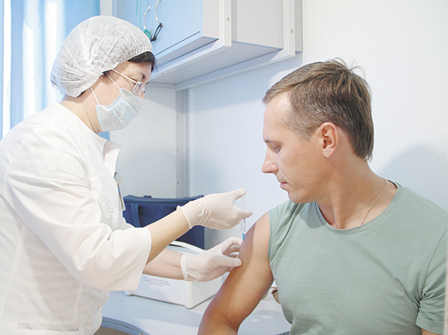
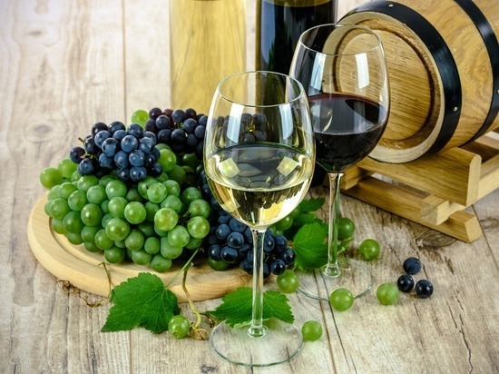
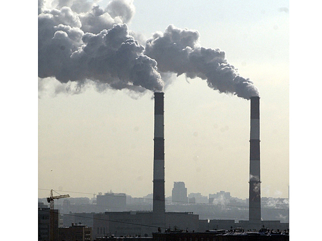
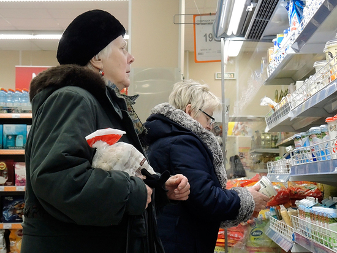

С наступлением холодов в Россию придут четыре штамма вируса гриппа

В Москве подведены предварительные итоги массовой вакцинации против сезонного гриппа. В этом году жителей столицы от опасного вируса начали прививать еще в конце августа. «Уколоться» можно было не только в городских поликлиниках, больницах и в мобильных пунктах у станций метро, но и в МФЦ (многофункциональных центрах госуслуг), и в торгово-развлекательных центрах. Всего работало более 500 пунктов вакцинации, где любой москвич без проблем мог привиться, причем абсолютно бесплатно.

Ученые продолжают спорить, полезно вино или вредно. А диетологи, составляя программы похудания для пациентов, никогда не включают с них этот напиток. Стоит ли отказываться от вина, если хочется похудеть? Об этом узнал «МК».
[25.10.2018]
Рост болезней легких у горожан встревожил врачей

Согласитесь, очень неприятна для слуха аббревиатура ХОБЛ, да и означает она отвратительную патологию — хроническая обструктивная болезнь легких. Но что еще более ужасно — несмотря на предпринимаемые в последние годы меры, в том числе финансовые, заболеваемость ХОБЛ и пневмониями в России, в том числе и в столице, растет.
Социологи назвали пугающие россиян продукты

Каковы главные пищевые страхи россиян? Чего мы опасаемся разумно, а чего напрасно? Опрос на эту тему в октябре 2018 года провел национальный исследовательский центр «Здоровое питание». Оказалось, большинство россиян читают этикетки на продуктах питания. При этом определяющим фактором при выборе продукта для большинства соотечественников является цена — на нее смотрят гораздо чаще, чем даже на срок годности.